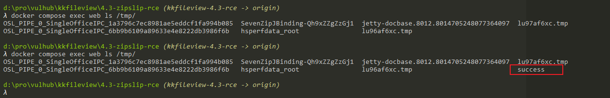

kkFileView ZipSlip 远程命令执行漏洞¶
kkFileView是一个文档预览解决方案。
在kkFileView 4.4.0-beta以前，存在一处ZipSlip漏洞。攻击者可以利用该漏洞，向服务器任意目录下写入文件，导致任意命令执行漏洞。
参考链接：
漏洞环境¶
执行如下命令启动一个kkFileView 3.4.0服务器：
docker compose up -d
服务启动后，访问http://your-ip:8012即可查看到首页。
漏洞复现¶
首先，修改并执行poc.py，生成POC文件：
python poc.py
然后，test.zip将被写入到当前目录下。
上传test.zip和sample.odt两个文件到kkFileView服务中：

然后，点击test.zip的“预览”按钮，可以看到zip压缩包中的文件列表：

最后，点击sample.odt的“预览”按钮，触发代码执行漏洞。
可见，touch /tmp/success已经成功被执行：
